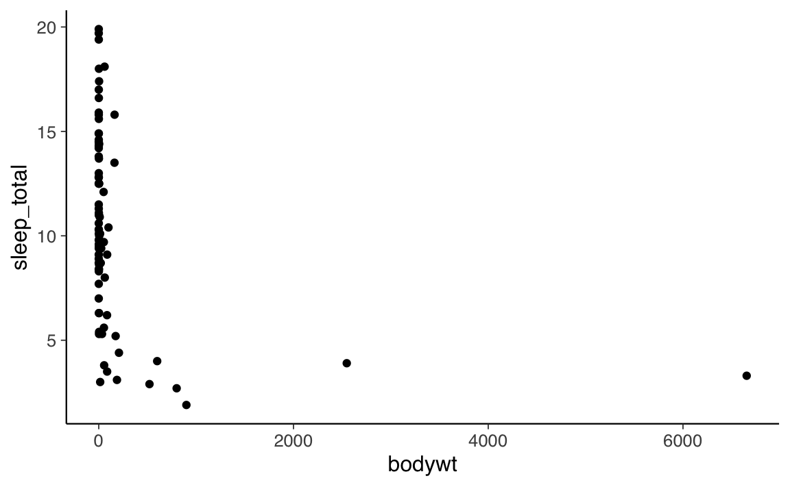
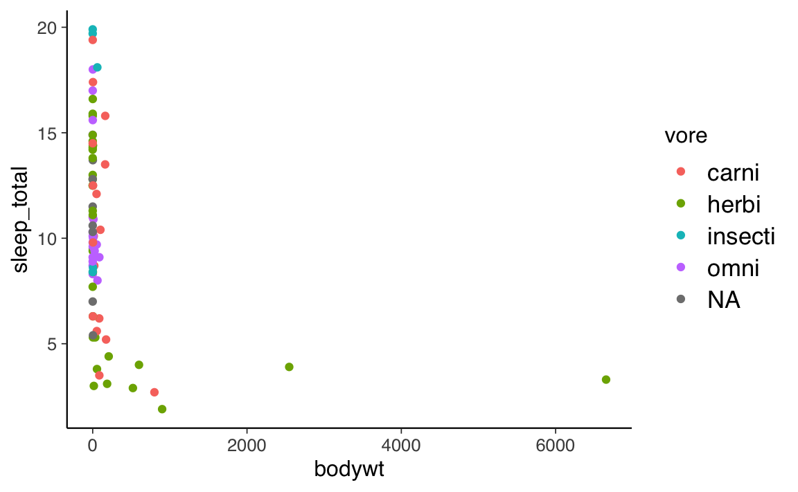
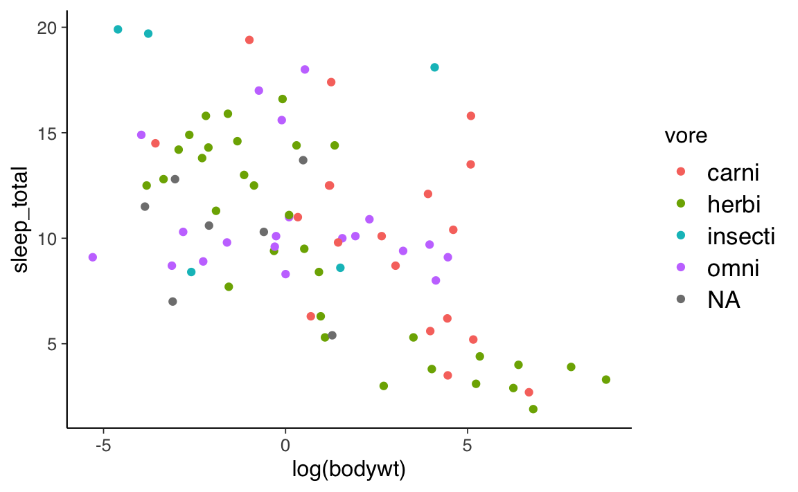
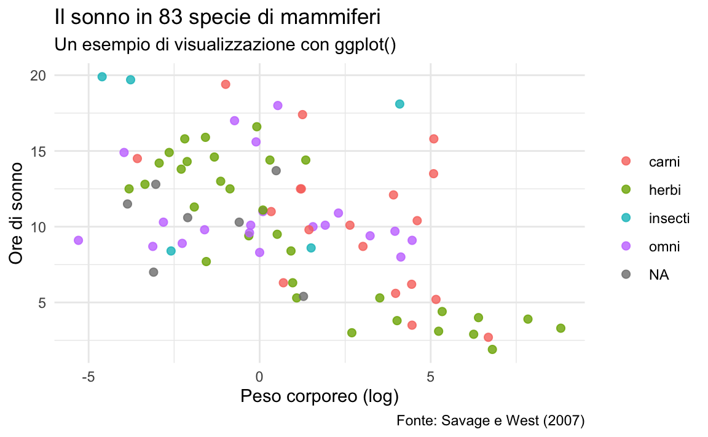
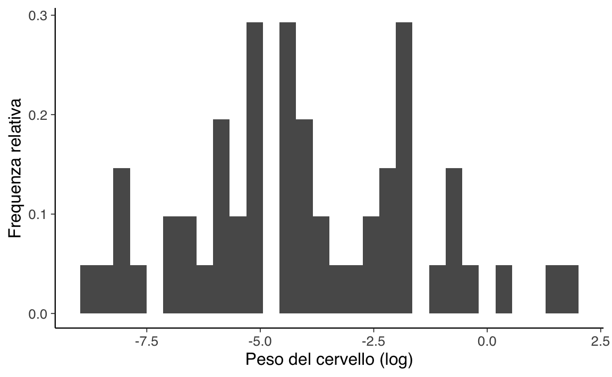

library("tidyverse")
data(msleep)
dim(msleep)
#> [1] 83 116 Manipolazione e visualizzazione dei dati in \(\mathsf{R}\)
In questo capitolo esamineremo le fuzionalità di \(\mathsf{R}\) per la manipolazione e la visualizzazione dei dati. Nello specifico, esamineremo le funzioni fornite dal pacchetto dplyr.
6.1 Codifica dei dati grezzi
Si chiamano “dati grezzi” quelli che provengono dal mondo circostanze, i dati raccolti per mezzo di esperimenti, interviste, questionari, ecc. Questi dati (detti dataset) raramente vengono forniti con una struttura logica precisa. Per poterli elaborare mediante software è necessario prima trasformarli in maniera tale che abbiano una struttura logica organizzata. La struttura che solitamente si utilizza è quella tabellare (detta matrice dei dati), ovvero si dispongono i dati in una tabella nella quale ciascuna riga corrisponde ad un’osservazione e ciascuna colonna corrisponde ad una variabile rilevata. In \(\mathsf{R}\) una tale struttura è chiamata data frame o tibble (il tibble è solo un modo diverso di stampare un data frame sulla console).
6.2 Trattamento dei dati con dplyr
Utilizzando i pacchetti del tidyverse (tidyverse è un insieme, o bundle, di pacchetti R), le operazioni di trasformazione dei dati risultano molto semplificate. Per la manipolazione dei dati vengono usati i seguenti pacchetti del tidyverse:
dplyr-
tidyr(tibbles, dataframe e tabelle) -
stringr(stringhe)
Il pacchetto dplyr (al momento uno dei pacchetti più famosi e utilizzati per la gestione dei dati) offre una serie di funzionalità che consentono di eseguire le operazioni più comuni di manipolazione dei dati in una maniera più semplice rispetto a quanto succeda quando usiamo le funzioni base di R.
Il pacchetto dplyr include sei funzioni base: filter(), select(), mutate(), arrange(), group_by() e summarise(). Queste sei funzioni costituiscono i verbi del linguaggio di manipolazione dei dati. A questi sei verbi si aggiunge il pipe %>% (oppure |>) che serve a concatenare più operazioni. In particolare, considerando una matrice osservazioni per variabili, select() e mutate() si occupano di organizzare le variabili, filter() e arrange() i casi, e group_by() e summarise() i gruppi.
Per introdurre le funzionalità di dplyr, utilizzeremo i dati msleep forniti dal pacchetto ggplot2. Tali dati descrivono le ore di sonno medie di 83 specie di mammiferi (Savage et al., 2007). Carichiamo il boundle tidyverse (che contiene ggplot2) e leggiamo nella memoria di lavoro l’oggetto msleep:
6.2.0.1 Operatore pipe
Prima di presentare le funzionalità di dplyr, introduciamo l’operatore pipe %>% del pacchetto magrittr – ma ora presente anche in base \(\mathsf{R}\) nella versione |>. L’operatore pipe, %>% o |>, serve a concatenare varie funzioni insieme, in modo da inserire un’operazione dietro l’altra. Una spiegazione intuitiva dell’operatore pipe è stata fornita in un tweet di @andrewheiss. Consideriamo la seguente istruzione in pseudo-codice \(\mathsf{R}\):
leave_house(
get_dressed(
get_out_of_bed(
wake_up(me, time = "8:00"),
side = "correct"),
pants = TRUE,
shirt = TRUE),
car = TRUE,
bike = FALSE
)Il listato precedente descrive una serie di (pseudo) funzioni concatenate, le quali costituiscono gli argomenti di altre funzioni. Scritto così, il codice è molto difficile da capire. Possiamo però ottenere lo stesso risultato utilizzando l’operatore pipe che facilita enormememnte la leggibilità del codice:
me |>
wake_up(time = "8:00") |>
get_out_of_bed(side = "correct") |>
get_dressed(pants = TRUE, shirt = TRUE) |>
leave_house(car = TRUE, bike = FALSE)In questa seconda versione del (pseudo) codice \(\mathsf{R}\) si capisce molto meglio ciò che vogliamo fare. Il tibble me viene passato alla funzione wake_up(). La funzione wake_up() ha come argomento l’ora del giorno: time = "8:00". Una volta “svegliati” (wake up) dobbiamo scendere dal letto. Quindi l’output di wake_up() viene passato alla funzione get_out_of_bed() la quale ha come argomento side = "correct" perché vogliamo scendere dal letto dalla parte giusta. E così via.
Questo pseudo-codice chiarisce il significato dell’operatore pipe. L’operatore |> è “syntactic sugar” per una serie di chiamate di funzioni concatenate, ovvero, detto in altre parole, consente di definire la relazione tra una serie di funzioni nelle quali il risultato (output) di una funzione viene utilizzato come l’input di una funzione successiva.
6.3 Esaminare i dati
Iniziamo a trasformare il data frame msleep in un tibble.
msleep <- tibble(msleep)I nomi delle colonne del tibble (ovvero, i nomi delle variabili del campione) si ottengono con la funzione names().
names(msleep)
#> [1] "name" "genus" "vore" "order" "conservation"
#> [6] "sleep_total" "sleep_rem" "sleep_cycle" "awake" "brainwt"
#> [11] "bodywt"I valori iniziali di ciascuna colonna del tibble possono essere visualizzati usando la funzone glimpse().
glimpse(msleep)
#> Rows: 83
#> Columns: 11
#> $ name <chr> "Cheetah", "Owl monkey", "Mountain beaver", "Greater shor…
#> $ genus <chr> "Acinonyx", "Aotus", "Aplodontia", "Blarina", "Bos", "Bra…
#> $ vore <chr> "carni", "omni", "herbi", "omni", "herbi", "herbi", "carn…
#> $ order <chr> "Carnivora", "Primates", "Rodentia", "Soricomorpha", "Art…
#> $ conservation <chr> "lc", NA, "nt", "lc", "domesticated", NA, "vu", NA, "dome…
#> $ sleep_total <dbl> 12.1, 17.0, 14.4, 14.9, 4.0, 14.4, 8.7, 7.0, 10.1, 3.0, 5…
#> $ sleep_rem <dbl> NA, 1.8, 2.4, 2.3, 0.7, 2.2, 1.4, NA, 2.9, NA, 0.6, 0.8, …
#> $ sleep_cycle <dbl> NA, NA, NA, 0.1333333, 0.6666667, 0.7666667, 0.3833333, N…
#> $ awake <dbl> 11.9, 7.0, 9.6, 9.1, 20.0, 9.6, 15.3, 17.0, 13.9, 21.0, 1…
#> $ brainwt <dbl> NA, 0.01550, NA, 0.00029, 0.42300, NA, NA, NA, 0.07000, 0…
#> $ bodywt <dbl> 50.000, 0.480, 1.350, 0.019, 600.000, 3.850, 20.490, 0.04…Per le variabili qualitative, possiamo creare una distribuzione di frequenze assolute mediante la funzione table().
table(msleep$vore)
#>
#> carni herbi insecti omni
#> 19 32 5 20Usando table() possiamo anche creare una tabella di contingenza.
table(msleep$vore, msleep$conservation)
#>
#> cd domesticated en lc nt vu
#> carni 1 2 1 5 1 4
#> herbi 1 7 2 10 3 3
#> insecti 0 0 1 2 0 0
#> omni 0 1 0 8 0 0Si ricordi che, quando si usa table() per creare una tabella di contingenza, i dati mancanti (NA) vengono esclusi.
6.4 Estrarre una singola colonna con pull()
Estraiamo da msleep la variabile sleep_total usando il verbo pull():
msleep |>
pull(sleep_total)
#> [1] 12.1 17.0 14.4 14.9 4.0 14.4 8.7 7.0 10.1 3.0 5.3 9.4 10.0 12.5 10.3
#> [16] 8.3 9.1 17.4 5.3 18.0 3.9 19.7 2.9 3.1 10.1 10.9 14.9 12.5 9.8 1.9
#> [31] 2.7 6.2 6.3 8.0 9.5 3.3 19.4 10.1 14.2 14.3 12.8 12.5 19.9 14.6 11.0
#> [46] 7.7 14.5 8.4 3.8 9.7 15.8 10.4 13.5 9.4 10.3 11.0 11.5 13.7 3.5 5.6
#> [61] 11.1 18.1 5.4 13.0 8.7 9.6 8.4 11.3 10.6 16.6 13.8 15.9 12.8 9.1 8.6
#> [76] 15.8 4.4 15.6 8.9 5.2 6.3 12.5 9.8In maniera equivalente, possiamo usare l’operatore $ di base \(\mathsf{R}\):
msleep$sleep_total
#> [1] 12.1 17.0 14.4 14.9 4.0 14.4 8.7 7.0 10.1 3.0 5.3 9.4 10.0 12.5 10.3
#> [16] 8.3 9.1 17.4 5.3 18.0 3.9 19.7 2.9 3.1 10.1 10.9 14.9 12.5 9.8 1.9
#> [31] 2.7 6.2 6.3 8.0 9.5 3.3 19.4 10.1 14.2 14.3 12.8 12.5 19.9 14.6 11.0
#> [46] 7.7 14.5 8.4 3.8 9.7 15.8 10.4 13.5 9.4 10.3 11.0 11.5 13.7 3.5 5.6
#> [61] 11.1 18.1 5.4 13.0 8.7 9.6 8.4 11.3 10.6 16.6 13.8 15.9 12.8 9.1 8.6
#> [76] 15.8 4.4 15.6 8.9 5.2 6.3 12.5 9.8Possiamo ordinare i dati con sort().
msleep$sleep_total |>
sort()
#> [1] 1.9 2.7 2.9 3.0 3.1 3.3 3.5 3.8 3.9 4.0 4.4 5.2 5.3 5.3 5.4
#> [16] 5.6 6.2 6.3 6.3 7.0 7.7 8.0 8.3 8.4 8.4 8.6 8.7 8.7 8.9 9.1
#> [31] 9.1 9.4 9.4 9.5 9.6 9.7 9.8 9.8 10.0 10.1 10.1 10.1 10.3 10.3 10.4
#> [46] 10.6 10.9 11.0 11.0 11.1 11.3 11.5 12.1 12.5 12.5 12.5 12.5 12.8 12.8 13.0
#> [61] 13.5 13.7 13.8 14.2 14.3 14.4 14.4 14.5 14.6 14.9 14.9 15.6 15.8 15.8 15.9
#> [76] 16.6 17.0 17.4 18.0 18.1 19.4 19.7 19.9Oppure, in ordine decrescente:
msleep$sleep_total |>
sort(decreasing = TRUE)
#> [1] 19.9 19.7 19.4 18.1 18.0 17.4 17.0 16.6 15.9 15.8 15.8 15.6 14.9 14.9 14.6
#> [16] 14.5 14.4 14.4 14.3 14.2 13.8 13.7 13.5 13.0 12.8 12.8 12.5 12.5 12.5 12.5
#> [31] 12.1 11.5 11.3 11.1 11.0 11.0 10.9 10.6 10.4 10.3 10.3 10.1 10.1 10.1 10.0
#> [46] 9.8 9.8 9.7 9.6 9.5 9.4 9.4 9.1 9.1 8.9 8.7 8.7 8.6 8.4 8.4
#> [61] 8.3 8.0 7.7 7.0 6.3 6.3 6.2 5.6 5.4 5.3 5.3 5.2 4.4 4.0 3.9
#> [76] 3.8 3.5 3.3 3.1 3.0 2.9 2.7 1.9Possiamo attribuire la colonna estratta dal tibble ad un oggetto nella memoria di lavoro di \(\mathsf{R}\) usando l’operatore di attribuzione <-.
sl_tot <- msleep |>
pull(sleep_total)Essendo sl_tot presente nella emoria di lavoro di \(\mathsf{R}\), possiamo passarlo a qualsiasi altra funzione di \(\mathsf{R}\). Per esempio, possiamo calcolare la media di sl_tot usando la funzione mean()
mean(sl_tot)
#> [1] 10.43373oppure la deviazione standard usando la funzione sd()
sd(sl_tot)
#> [1] 4.450357
6.5 Selezionare più colonne con select()
Se vogliamo selezionare da msleep un insieme di variabili, ad esempio name, vore e sleep_total, possiamo usare il verbo select()
dt <- msleep |>
dplyr::select(name, vore, sleep_total)
dt
#> # A tibble: 83 × 3
#> name vore sleep_total
#> <chr> <chr> <dbl>
#> 1 Cheetah carni 12.1
#> 2 Owl monkey omni 17
#> 3 Mountain beaver herbi 14.4
#> 4 Greater short-tailed shrew omni 14.9
#> 5 Cow herbi 4
#> 6 Three-toed sloth herbi 14.4
#> 7 Northern fur seal carni 8.7
#> 8 Vesper mouse <NA> 7
#> # … with 75 more rowsladdove la sequenza di istruzioni precedenti significa che abbiamo passato msleep alla funzione select() contenuta nel pacchetto dplyr e l’output di select() è stato salvato (usando l’operatore di assegnazione, <-) nell’oggetto dt. Alla funzione select() abbiamo passato gli argomenti name, vore e sleep_total.
6.6 Selezionare le righe che soddisfano una condizione
Il verbo filter() consente di selezionare da un tibble un sottoinsieme di righe (osservazioni). Per esempio, possiamo selezionare tutte le osservazioni nella variabile vore contrassegnate come carni (ovvero, tutti i carnivori):
dt %>%
dplyr::filter(vore == "carni")
#> # A tibble: 19 × 3
#> name vore sleep_total
#> <chr> <chr> <dbl>
#> 1 Cheetah carni 12.1
#> 2 Northern fur seal carni 8.7
#> 3 Dog carni 10.1
#> 4 Long-nosed armadillo carni 17.4
#> 5 Domestic cat carni 12.5
#> 6 Pilot whale carni 2.7
#> 7 Gray seal carni 6.2
#> 8 Thick-tailed opposum carni 19.4
#> # … with 11 more rowsPer utilizzare il verbo filter() in modo efficace è neccessario usare gli operatori relazionali
e gli operatori logici di \(\mathsf{R}\).
\[\begin{array}{l l} \hline \text{Operazione logica} & \text{Operatore} \\ \hline \text{AND} & \& \\ \text{OR } & | \\ \text{NOT} & ! \\ \hline \end{array}\]Per un approfondimento, si veda il Capitolo Comparisons di R for Data Science.
6.7 Creare una nuova variabile con mutate()
Talvolta vogliamo creare una nuova variabile, per esempio, sommando o dividendo due variabili, oppure calcolandone la media. A questo scopo si usa il verbo mutate(). Per esempio, se vogliamo esprimere i valori di sleep_total in minuti, moltiplichiamo per 60:
6.8 Ordinare i dati con arrange()
Il verbo arrange() ordina i dati in base ai valori di una o più variabili. Per esempio, possiamo ordinare la variabile sleep_total dal valore più alto al più basso in questo modo:
dt |>
arrange(
desc(sleep_total)
)
#> # A tibble: 83 × 3
#> name vore sleep_total
#> <chr> <chr> <dbl>
#> 1 Little brown bat insecti 19.9
#> 2 Big brown bat insecti 19.7
#> 3 Thick-tailed opposum carni 19.4
#> 4 Giant armadillo insecti 18.1
#> 5 North American Opossum omni 18
#> 6 Long-nosed armadillo carni 17.4
#> 7 Owl monkey omni 17
#> 8 Arctic ground squirrel herbi 16.6
#> # … with 75 more rows
6.9 Raggruppare i dati con group_by()
Il verbo group_by() raggruppa insieme i valori in base a una o più variabili. Lo vedremo in uso in seguito insieme a summarise().
Nota: con dplyr(), le operazioni raggruppate vengono iniziate con la funzione group_by(). È una buona norma utilizzare ungroup() alla fine di una serie di operazioni raggruppate, altrimenti i raggruppamenti verranno mantenuti nelle analisi successiva, il che non è sempre auspicabile.
6.10 Sommario dei dati con summarise()
Il verbo summarise() collassa il dataset in una singola riga dove viene riportato il risultato della statistica richiesta. Per esempio, la media del tempo totale del sonno è
6.11 Operazioni raggruppate
Sopra abbiamo visto come i mammiferi considerati dormano, in media, 10.4 ore al giorno. Troviamo ora il sonno medio in funzione di vore:
Si noti che, nel caso di 7 osservazioni, il valore di vore non era specificato. Per tali osservazioni, dunque, la classe di appartenenza è NA.
6.12 Applicare una funzione su più colonne: across()
È spesso utile eseguire la stessa operazione su più colonne, ma copiare e incollare è sia noioso che soggetto a errori:
In tali circostanze è possibile usare la funzione across() che consente di riscrivere il codice precedente in modo più succinto:
Per i dati presenti, ad esempio, possiamo avere:
msleep |>
group_by(vore) |>
summarise(across(starts_with("sleep"), ~ mean(.x, na.rm = TRUE)))
#> # A tibble: 5 × 4
#> vore sleep_total sleep_rem sleep_cycle
#> <chr> <dbl> <dbl> <dbl>
#> 1 carni 10.4 2.29 0.373
#> 2 herbi 9.51 1.37 0.418
#> 3 insecti 14.9 3.52 0.161
#> 4 omni 10.9 1.96 0.592
#> 5 <NA> 10.2 1.88 0.1836.13 Dati categoriali in \(\mathsf{R}\)
Consideriamo una variabile che descrive il genere e include le categorie male, female e non-conforming. In \(\mathsf{R}\), ci sono due modi per memorizzare queste informazioni. Uno è usare la classe character strings e l’altro è usare la classe factor. Non ci addentrimo qui nelle sottigliezze di questa distinzione, motivata in gran parte per le necessità della programmazione con le funzioni di tidyverse. Per gli scopi di questo insegnamento sarà sufficiente codificare le variabili qualitative usando la classe factor. Una volta codificati i dati qualitativi utilizzando la classe factor, si pongono spesso due problemi:
- modificare le etichette dei livelli (ovvero, le modalità) di un fattore,
- riordinare i livelli di un fattore.
6.14 Modificare le etichette dei livelli di un fattore
Esaminiamo l’esempio seguente.
Supponiamo ora di volere che i livelli del fattore f_1 abbiano le etichette new_1, new_2, ecc. Per ottenere questo risultato usiamo la funzione forcats::fct_recode():
df <- df |>
mutate(f_1 =
forcats::fct_recode(
f_1,
"poco" = "old_1",
"medio" = "old_2",
"tanto" = "old_3",
"massimo" = "old_4"
)
)
df
#> # A tibble: 5 × 2
#> f_1 y
#> <fct> <int>
#> 1 tanto 1
#> 2 massimo 2
#> 3 poco 3
#> 4 poco 4
#> 5 medio 56.15 Riordinare i livelli di un fattore
Spesso i livelli dei fattori hanno un ordinamento naturale. Quindi, gli utenti devono avere un modo per imporre l’ordine desiderato sulla codifica delle loro variabili qualitative. Se per qualche motivo vogliamo ordinare i livelli f_1 in ordine inverso, ad esempio, possiamo procedere nel modo seguente.
Per approfondire le problematiche della manipolazione di variabili qualitative in \(\mathsf{R}\), si veda McNamara & Horton (2018).
6.16 Creare grafici con ggplot2()
Il pacchetto ggplot2() è un potente strumento per rappresentare graficamente i dati. Le iniziali del nome, gg, si riferiscono alla “Grammar of Graphics”, che è un modo di pensare le figure come una serie di layer stratificati. Originariamente descritta da Wilkinson (2012), la grammatica dei grafici è stata aggiornata e applicata in R da Hadley Wickham, il creatore del pacchetto.
La funzione da cui si parte per inizializzare un grafico è ggplot(). La funzione ggplot() richiede due argomenti. Il primo è l’oggetto di tipo data.frame che contiene i dati da visualizzare – in alternativa al primo argomento, un dataframe può essere passato a ggplot() mediante l’operatore pipe. Il secondo è una particolare lista che viene generata dalla funzione aes(), la quale determina l’aspetto (aesthetic) del grafico. La funzione aes() richiede necessariamente di specificare “x” e “y”, ovvero i nomi delle colonne del data.frame che è stato utilizzato quale primo argomento di ggplot() (o che è stato passato da pipe), le quali rappresentano le variabili da porre rispettivamente sugli assi orizzontale e verticale.
La definizione della tipologia di grafico e i vari parametri sono poi definiti successivamente, aggiungendo all’oggetto creato da ggplot() tutte le componenti necessarie. Saranno quindi altre funzioni, come geom_bar(), geom_line() o geom_point() a occuparsi di aggiungere al livello di base barre, linee, punti, e così via. Infine, tramite altre funzioni, ad esempio labs(), sarà possibile definire i dettagli più fini.
Gli elementi grafici (bare, punti, segmenti, …) usati da ggplot2 sono chiamati geoms. Mediante queste funzioni è possibile costruire diverse tipologie di grafici:
-
geom_bar(): crea un layer con delle barre; -
geom_point(): crea un layer con dei punti (diagramma a dispersione); -
geom_line(): crea un layer con una linea retta; -
geom_histogram(): crea un layer con un istogramma; -
geom_boxplot(): crea un layer con un box-plot; -
geom_errorbar(): crea un layer con barre che rappresentano intervalli di confidenza; -
geom_hline()egeom_vline(): crea un layer con una linea orizzontale o verticale definita dall’utente.
Un comando generico ha la seguente forma:
La prima volta che si usa il pacchetto ggplot2 è necessario installarlo. Per fare questo possiamo installare tidyverse che, oltre a caricare ggplot2, carica anche altre utili funzioni per l’analisi dei dati. Ogni volta che si inizia una sessione R è necessario attivare i pacchetti che si vogliono usare, ma non è necessario istallarli una nuova volta. Se è necessario specificare il pacchetto nel quale è contenuta la funzione che vogliamo utilizzare, usiamo la sintassi package::function(). Per esempio, l’istruzione ggplot2::ggplot() rende esplicito che stiamo usando la funzione ggplot() contenuta nel pacchetto ggplot2.
6.17 Diagramma a dispersione
Consideriamo nuovamenti i dati contenuti nel tibble msleep e poniamoci il problema di rappresentare graficamente la relazione tra il numero medio di ore di sonno giornaliero (sleep_total) e il peso dell’animale (bodywt). Usando le impostazioni di default di ggplot2, con le istruzioni seguenti, otteniamo il grafico fornito dalla figura seguente.
data("msleep")
p <- msleep |>
ggplot(
aes(x = bodywt, y = sleep_total)
) +
geom_point()
print(p)
Coloriamo ora in maniera diversa i punti che rappresentano animali carnivori, erbivori, ecc.
p <- msleep |>
ggplot(
aes(x = bodywt, y = sleep_total, col = vore)
) +
geom_point()
print(p)
È chiaro, senza fare alcuna analisi statistica, che la relazione tra le due variabili non è lineare. Trasformando in maniera logaritmica i valori dell’asse \(x\) la relazione si linearizza.
p <- msleep |>
ggplot(
aes(x = log(bodywt), y = sleep_total, col = vore)
) +
geom_point()
print(p)
Infine, aggiustiamo il “tema” del grafico (si noti l’utilizzo di una tavolozza di colori adatta ai daltonici mediante il pacchetto viridis), aggiungiamo le etichette sugli assi e il titolo.
library("viridis")
msleep |>
ggplot(
aes(x = log(bodywt), y = sleep_total, col = vore)
) +
geom_point(size = 2, alpha = .8) +
labs(
x = "Peso corporeo (log)",
y = "Ore di sonno",
title = "Il sonno in 83 specie di mammiferi",
subtitle = "Un esempio di visualizzazione con ggplot()",
caption = "Fonte: Savage e West (2007)"
) +
scale_fill_viridis(discrete = TRUE, option = "viridis") +
theme_minimal() +
theme(legend.title = element_blank()) 
La visualizzazione può essere migliorata cambiando le etichette della legenda del grafico. Per fare questo è necessario intervenire sui dati prima di usare ggplot() – per esempio, come abbiamo fatto in precedenza con la funzione forcats::fct_recode().
6.18 Istogramma
Creiamo ora un istogramma che rappresenta la distribuzione del (logaritmo del) peso medio del cervello delle 83 specie di mammiferi considerate da Savage & West (2007). L’argomento aes(y = ..density..) in geom_histogram() produce le frequenze relative. L’opzione di default (senza questo argomento) porta ggplot() a rappresentare le frequenze assolute.
msleep |>
ggplot(
aes(log(brainwt))
) +
geom_histogram(aes(y = ..density..)) +
labs(
x = "Peso del cervello (log)",
y = "Frequenza relativa"
) +
theme(legend.title = element_blank())
Commenti e considerazioni finali
Per minimizzare gli errori di sintassi (dimenticare una virgola, non chiudere una parentesi, ecc.) – ovvero, gli errori più frequenti quando si scrive il codice in \(\mathsf{R}\) – è necessario utilizzare uno stile di programmazione. Uno stile di programmazione è un insieme di regole per la gestione dell’indentazione dei blocchi di codice, per la creazione dei nomi dei file e delle variabili e per le convenzioni tipografiche che vengono usate. Scrivere il codice in \(\mathsf{R}\) con stile consente di creare listati più leggibili e semplici da modificare, minimizza la possibilità di errore, e consente correzioni e modifiche più rapide. Vi sono molteplici stili di programmazione che possono essere utilizzati dall’utente, anche se è bene attenersi a quelle che sono le convenzioni maggiormente diffuse, allo scopo di favorire la comunicazione. In ogni caso, l’importante è di essere coerenti, ovvero di adottare le stesse convenzioni in tutte le parti del codice che si scrive. Ad esempio, se si sceglie di usare lo stile snake_case per il nome composto di una variabile (es., personality_trait), non è appropriato usare lo stile lower Camel case per un’altra variabile (es., socialStatus). Dato che questo argomento è stato trattato ampiamente in varie sedi, mi limito qui a rimandare ad uno stile di programmazione molto popolare, quello proposto da Hadley Wickham, il creatore di tidyverse. La soluzione più semplice è quella installare stiler, che è uno RStudio Addin, e formattare il codice in maniera automatica utilizzando lo stile proposto da Hadley Wickham. Si possono ottenere informazioni su stiler seguendo questo link.